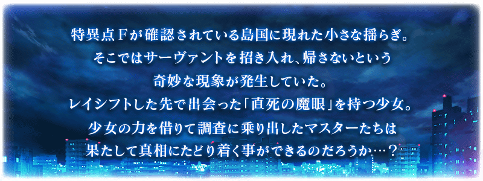

◆活動舉辦◆
2016年2月末
◆活動概要◆
Fate/Grand Order舉辦首次合作活動「空の境界/the Garden of Order」！
奈須きのこ原作「空の境界 the Garden of sinners」的女主角「兩儀式」作為活動限定Servant「★4(SR)兩儀式〔Assassin〕」在Fate/Grand Order的世界登場！
與兩儀式一同解開出現在特異點F附近波動起伏的謎題吧！
◆活動參加条件◆
唯有通過「特異點F 炎上汚染都市 冬木」的Master方可參加
在Fate/Grand Order官方網站內的首頁及展覽室，公開了合作活動的電視廣告。
還請一併確認。